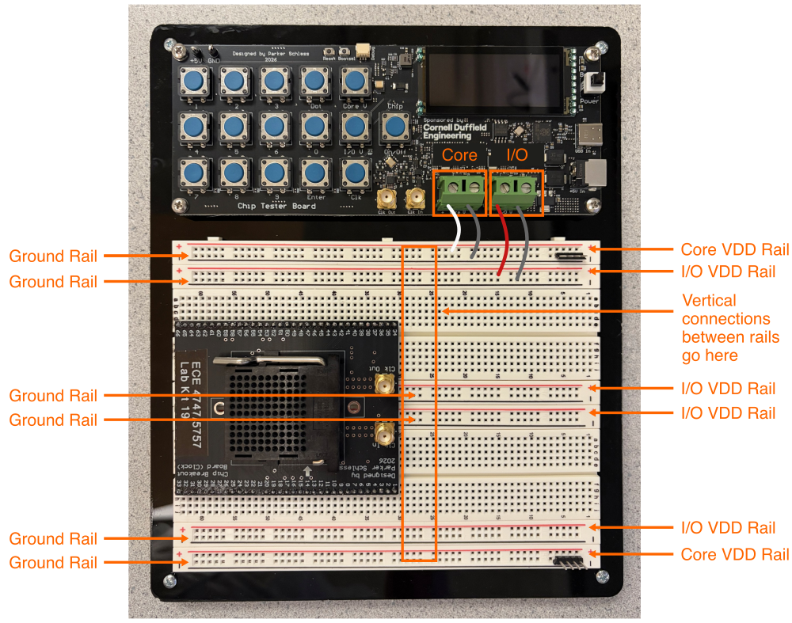
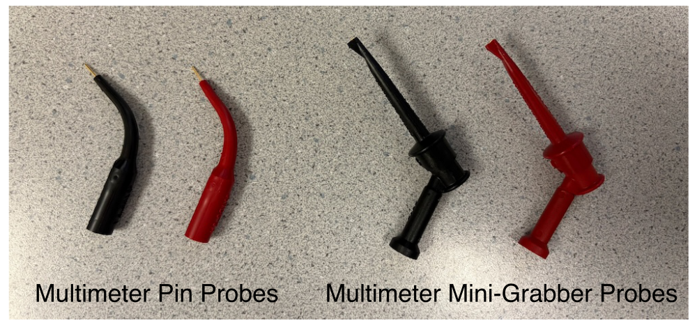
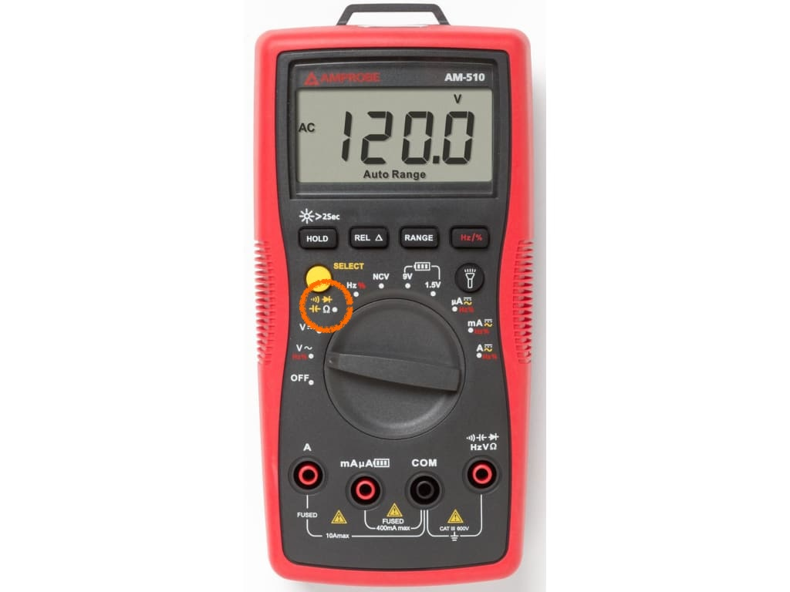
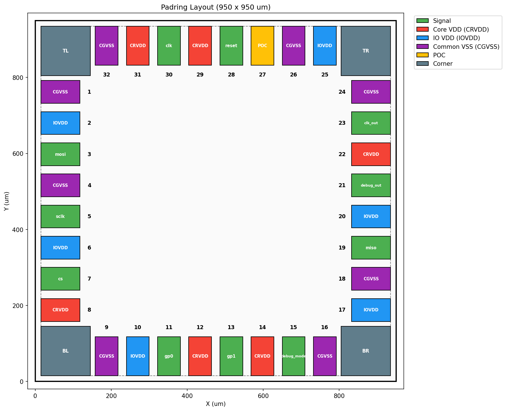
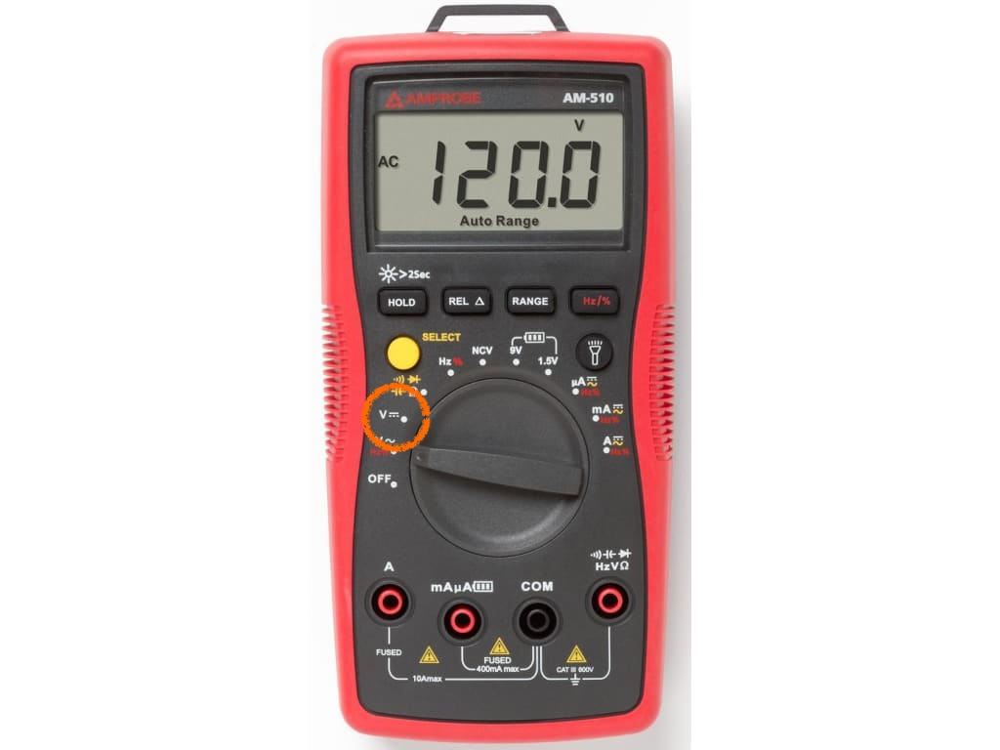

Lab 2: Power Routing
In this lab, you will be routing the I/O VDD, core VDD, and ground nets on your breadboard. Recall that I/O VDD is the power supply for the input/output pads and is nominally 3.3V, and core VDD is the power supply for the core logic within your chip and is nominally 1.8V. Both the I/O VDD and core VDD share a common ground.
To get started find a free workstation and log in with your NetID and NetID password.
Do not connect the USB-C cable to your breadboard chip tester yet!
For now, do not even connect the USB-C cable to your breadboard chip tester yet. We want to be sure the board is not powered while you are doing your power routing.
Make your breadboard chip tester neat and tidy!!
You will be incrementally developing your breadboard chip tester over the next nine weeks. Please spend time making your breadboard chip tester neat and tidy! This is not just cosmetic. A neat and tidy breadboard makes it easier to correctly wire up your board and easier to debug any issues. You will be cutting, stripping, and bending your own jumper wires. This will make your breadboard tidy and easier to debug. Watch this video to learn how to create these custom jumper wires:
You must double and triple check your power routing!
You must be very careful in how you do your power routing. If you accidently connect I/O VDD to core VDD you can damage your chip. So please carefully double and triple check your power routing.
1. Power Rail Routing
You will first connect the I/O VDD, core VDD, and ground rails to the chip tester board and then connect the various horizontal rails together.
1.1. Wire
We will be using the horizontal rails for the I/O VDD, core VDD, and ground nets. The following picture shows which rails should be used for which net.

You should use the following color scheme:
- I/O VDD: red
- Core VDD: white
- Ground: black
Start by wiring from the green screw terminals on the chip tester board to the breadboard. You need to strip just enough wire to fit into the scre terminal, then use the small screwdriver included in your kit. Do not overtighten but also make sure there is a good connection.
Then add some vertical power routing in the middle of your breadboard to connect together all of rails for the same net. So you will need to add vertical red wires to connect together the four I/O VDD rails, add a long vertical white wire to connect together the two core VDD rails, and finally add vertical black wires to connect together the six ground rails. Be sure your jumper wires are neat and tidy!
1.2. Continuity Test
Now that we have finished our power rail routing, it is time to test it out. We will use a handheld multimeter for continuity testing to make sure all of the rails are connected together correctly. We will be using banana cables and two kinds of multimeter probes.

The multimeter pin probes can be used to probe different points on the breadboard, while multimeter mini-grabber probes are good when you want to clip a probe to a test point on the breadboard.
Continuity testing checks if two points on the breadboard are electrically connected. Turn on your handheld multimeter and set it to measure continuity as shown below.

You will need to press the yellow select button until you see the symbol for continuity testing (i.e., the curved lines indicating sound waves) on the display. When measuring continuity, the handheld multimeter will beep when there is a short circuit between the two probe points. You should use the multimeter pin probes for continuity testing. Insert the black probe into the COM port on the multimeter and the red probe into the right most port on the multimeter (with the continuity symbol).
Insert the red multimeter pin probe into one of the I/O VDD rails. Then insert the black probe into all of the other rails and ensure the multimeter only beeps when inserted into an I/O VDD rail.
Insert the red multimeter pin probe into one of the core VDD rails. Then insert the black probe into all of the other rails and ensure the multimeter only beeps when inserted into an core VDD rail. Insert the red multimeter pin probe into one of the ground rails. Then insert the black probe into all of the other rails and ensure the multimeter only beeps when inserted into a ground rail.
2. Chip Power Routing
You will now connect the I/O VDD, core VDD, and ground pins on the breakout board to the corresponding I/O V, core VDD, and ground rails.
2.1. Wire
Recall that the Project 2 tape-outs used the following pin out.

The pin numbers are shown on the pin out. Our chip has the following pins:
- 6 I/O VDD
- 6 core VDD
- 8 ground
- poc (power on control)
- clk, clk_out
- reset
- cs, sclk, mosi, miso
- debug_mode, debug_out
- gp0, gp1
The following spreadsheet maps the chip pin out to the pin numbers on the breadboard:
You want to focus on the Breakout Board Pin and the Die Pin Name columns. You now need to carefully route the pins corresponding to I/O VDD (use red wire), core VDD (use white wire), and ground (use black wire) to the appropriate rail. You also need to connect the POC pin to the I/O VDD rail! The POC pin connects to the "power-on-control" I/O cell in the pad ring of your chip. This cell handles the situation when I/O VDD is greater than zero, but core VDD is not yet valid. It will safely prevent short circuit current.
2.2. Continuity Test
We will start with continuity testing again.
Insert the red probe into the I/O VDD rail and insert the black probe into the breadboard column for every I/O VDD pin to ensure the I/O VDD net is routed correctly. Be sure to verify the POC pin is connected to the I/O VDD net!
Insert the red probe into the core VDD rail and insert the black probe into the breadboard column for every core VDD pin to ensure the core VDD net is routed correctly.
Insert the red probe into the ground rail and insert the black probe into the breadboard column for every ground pin to ensure the ground net is routed correctly.
2.2. Voltage Drop
You can now go ahead and use the UCB-C cable to power the chip tester board. The chip tester includes two adjustable voltage sources, an adjustable clock generator, and a frequency counter. The Chip button is used to control whether or not the voltage sources and clock are actually connected to the breadboard. By default they are disconnected. Go ahead and press the Chip button and you should see your red power LED turn on. If the LED does not turn on, try flipping it around since an LED only works in one specific orientation.
Set your handheld multimeter to measure DC voltage as shown below.

We want to measure the I/O and core voltage close to the pins of the breakout board to ensure the voltage drop from the chip tester board to the breakout board is reasonable. We will continue to use the multimeter pin probes for testing the voltage drop.
Go ahead and insert the probes into the breadboard as close as possible to the breakout board pins for I/O VDD and ground. Probe all I/O VDD pins and verify they are close to 3.3V.
Go ahead and insert the probes into the breadboard as close as possible to the breakout board pins for core VDD and ground. Probe all I/O VDD pins and verify they are close to 1.8V.
2.3. Adjustable Voltage
Now let's use the chip tester board to adjust the voltage sources. Insert the probes into the breadboard to measure I/O VDD at the breakout board. Then change the I/O voltage using the following steps:
- Press the I/O V button
- Use the numbers and Dot button to enter 3.1
- Press the Enter button
Confirm that the chip tester board displays 3.1V and that the multimeter is measuring roughly 3.1V.
Insert the probes into the breadboard to measure core VDD at the breakout board. Then change the core voltage using the following steps:
- Press the Core V button
- Use the numbers and Dot button to enter 1.6
- Press the Enter button
Confirm that the chip tester board displays 1.6V and that the multimeter is measuring roughly 1.6V. Now repeat this test with a voltage of 2.0V.
3. Power LED
Finally, go ahead and add a red power LED. You should connect the LED to the I/O VDD rail and then place a 1KOhm resistor in series to ground. Trim the leads of your LED and resistor so they sit closer to the breadboard to ensure a neat and tidy breadboard chip tester. Verify that the power LED turns on when you power the chip (with the Chip button on the chip tester board) and turns off when you stop powering the chip (with the Chip button on the chip tester board).
You must double and triple check your power routing!
Now is a good time to double and triple check your power routing with your partner. Double and triple check that you have correctly routed the rails together. Double and triple check that you are connecting I/O VDD, core VDD, and ground to the correct pins. If you accidently connect I/O VDD to core VDD you can damage your chip. So please carefully double and triple check your power routing.